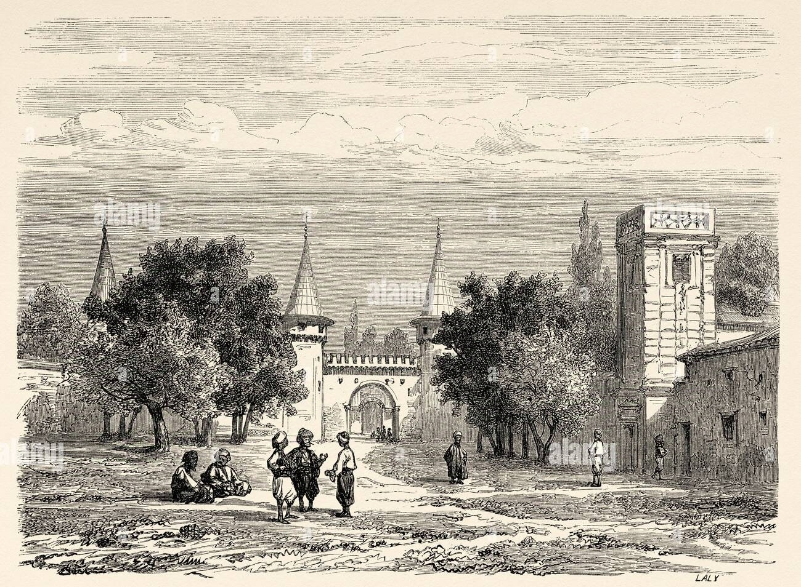
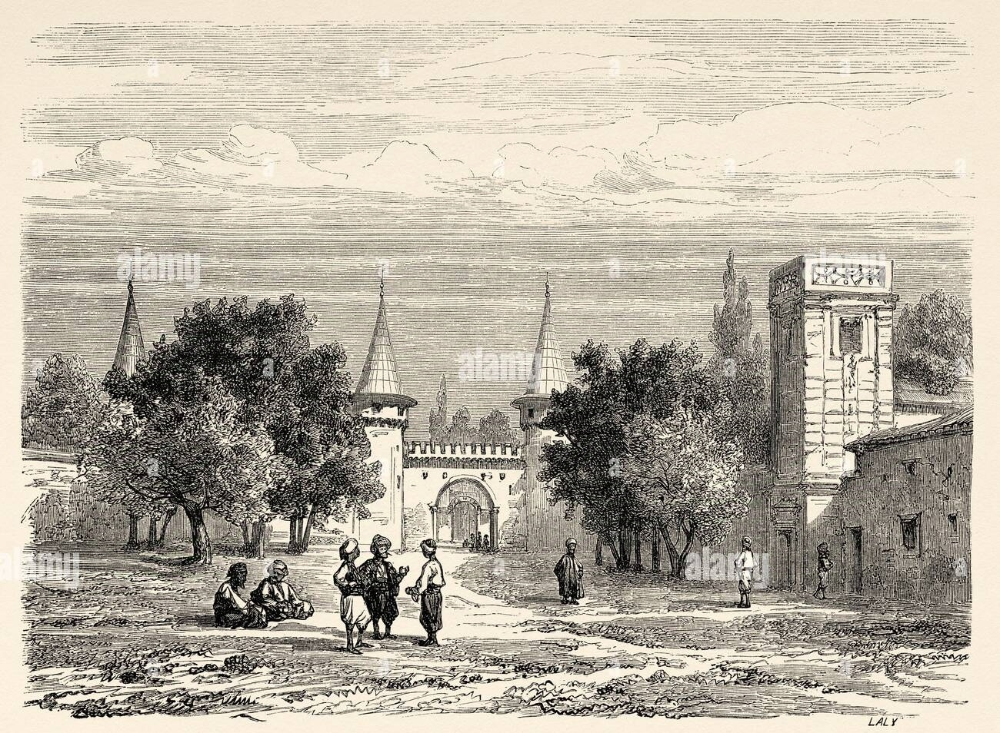
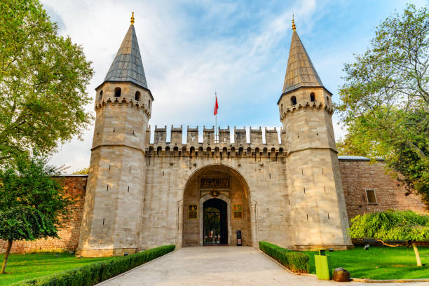
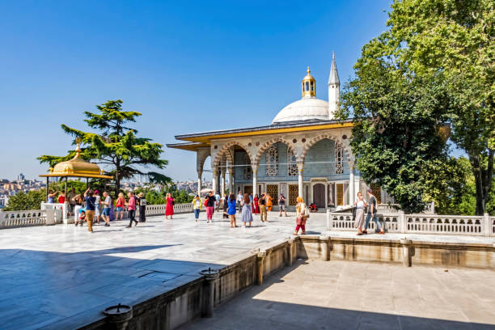

The Topkapi Palace, located in Istanbul, Turkey, is a historic royal residence that served as the home of Ottoman sultans for over 400 years, from the 15th to the 19th centuries.
The Topkapi Palace, located in Istanbul, Turkey, is a historic royal residence that served as the home of Ottoman sultans for over 400 years, from the 15th to the 19th centuries.
Constructed in 1459, the palace complex features stunning courtyards, gardens, and ornate architecture, showcasing the grandeur of the Ottoman Empire. It houses important artefacts, including the Imperial Harem, religious relics, and the famous Topkapi Dagger.
Today, the Topkapi Palace is a museum, offering visitors a glimpse into the opulent lifestyle of the sultans and the rich history of the Ottoman Empire.
